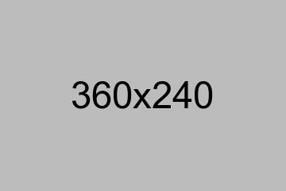

How we trained our AI model on Namibian ore specimens
A behind-the-scenes look at the data collection and model training process that powers OreGuide's identification engine.
Read MoreAim your camera at any ore sample and get an instant AI-powered identification with confidence scoring.
Access detailed profiles for each ore — chemical composition, formation, industrial uses, and Namibian deposits.
Explore interactive maps showing ore deposit locations and mining regions across the country.
Everything you need to identify, learn about, and explore Namibia's mineral heritage — all in one free app.
Machine-learning model trained on hundreds of Namibian ore specimens for accurate real-world identification.
Detailed cards covering chemical composition, physical properties, formation history, and industrial applications.
Interactive maps showing where each ore is found across Namibia's diverse geological regions and mining sites.
Save ore profiles for field use — all content works without an internet connection once downloaded.
All geological data reviewed and verified by UNAM geoscience faculty against real field specimens.
OreGuide is completely free to download and use — built for students, geologists, and curious minds alike.
A clean, intuitive interface designed for geologists, students, and mineral enthusiasts across Namibia.


Hear from geologists, students, and mineral enthusiasts who use OreGuide in the field and the classroom.
OreGuide has completely changed how I teach introductory geology. Students can identify specimens in real time — it makes every field trip far more engaging and educational.

I used to carry heavy reference books on every field survey. Now OreGuide sits in my pocket and gives me instant, accurate identifications. It's an indispensable tool for any geologist.

As a mining student, having access to verified ore profiles and deposit maps in one place is incredibly valuable. The offline feature means it works even in remote survey areas.

The AI identification is impressively accurate for Namibian ores specifically. You can see this was built with real local specimens, not just generic datasets — the detail is remarkable.
News, development updates, and geological stories from the OreGuide team.

A behind-the-scenes look at the data collection and model training process that powers OreGuide's identification engine.
Read More
From Tsumeb's rich copper deposits to the diamonds of the Skeleton Coast — exploring Namibia's mineral wealth.
Read More
We joined a UNAM field survey in the Otavi mountain range — here's how OreGuide performed in real conditions.
Read MoreStay up to date with new ore profiles, app updates, and geological discoveries across Namibia.